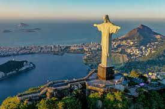
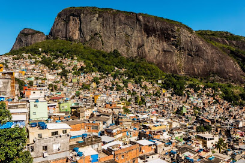
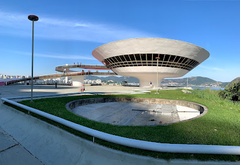
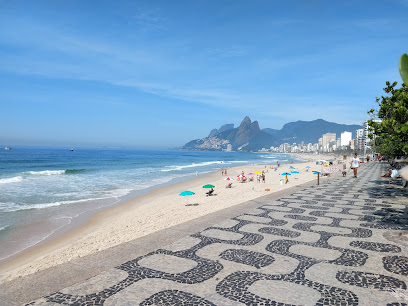

| Nome | Imagem | Endereço | Descrição |
|---|---|---|---|
| Cristo Redentor |  | Estr. da Cascatinha, 850 - Alto da Boa Vista, Rio de Janeiro - RJ, 20531-590 - Parque Nacional da Tijuca | O Cristo Redentor encontra-se de braços abertos, formando uma cruz, e tem 38 metros de altura, o que equivale a um edifício de 13 andares. Desse total, 30 metros são do monumento e oito do pedestal. Cada braço tem área de 88 metros quadrados e o pé mede 1,35 metro. Somente a cabeça pesa 30 toneladas. |
| Rocinha |  | Estr. da Gávea, 450 - Gávea, Rio de Janeiro - RJ, 22451-262 | A Rocinha é uma favela localizada na Zona Sul do município do Rio de Janeiro, no Brasil. Destaca-se por ser a maior favela do país, contando com cerca de 69 mil habitantes. |
| Museu de Arte Contemporânea de Niterói |  | Mirante da Boa Viagem, s/nº - Boa Viagem, Niterói - RJ, 24210-390 | Amplo acervo de obras de arte moderna em prédio icônico assinado pelo renomado arquiteto Oscar Niemeyer. |
| Ipanema |  | Ipanema, RJ | Praia com faixa de areia extensa frequentada para banhos de sol e para a prática de futebol e vôlei. Uma das praias mais famosas do Rio de Janeiro. |